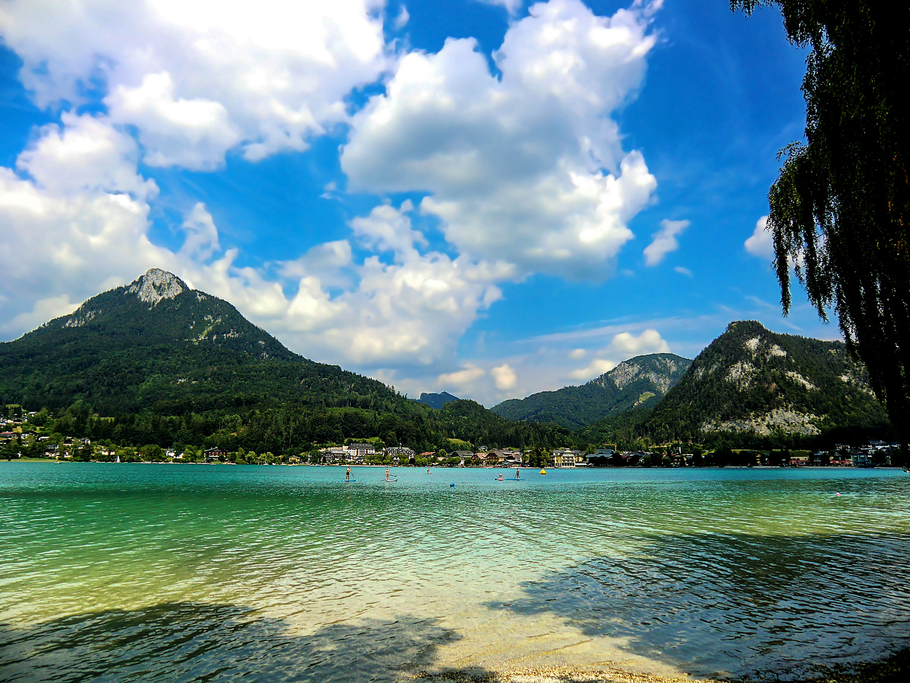

Fuschlsee
Fläche: ca. 2,6 km²
Details: Ein klarer, idyllischer See in der Nähe von Salzburg, umgeben von Wäldern und Bergen.
Besonders bekannt für seine ruhige Atmosphäre und als Naturparadies.
Der Fuschlsee, eingebettet in die malerische Landschaft
des Salzkammerguts, ist ein beliebtes Ziel für Erholungssuchende
und Wassersportler. Mit einer Fläche von etwa 2,7km² und einer
maximalen Tiefe von 69 Metern bietet der See ideale Bedingungen
für verschiedene Aktivitäten.
Öffentliche Badeplätze und Strandbäder am Fuschlsee
-
Naturbadestrand Hof bei Salzburg: Dieser Strand
befindet sich am Nordufer des Fuschlsees und bietet eine großzügige
Liegewiese sowie einen direkten Zugang zum See.
-
Fuschlseebad: Direkt in Fuschl am See
gelegen, bietet dieses Strandbad eine Liegewiese, einen
Sprungturm, eine Rutsche, einen Pool, Schwallbrausen, einen
Wasserpilz und ein Kinderbecken. Zudem werden Wasserski,
Fun-Reifen und Bananenfahrten angeboten.
-
Strandbad Thalgauberg: Dieses Strandbad am
Südufer des Fuschlsees bietet eine Liegewiese, einen Sprungturm,
eine Rutsche, einen Pool, Schwallbrausen, einen Wasserpilz und ein
Kinderbecken. Zudem werden Wasserski, Fun-Reifen und Bananenfahrten angeboten.
